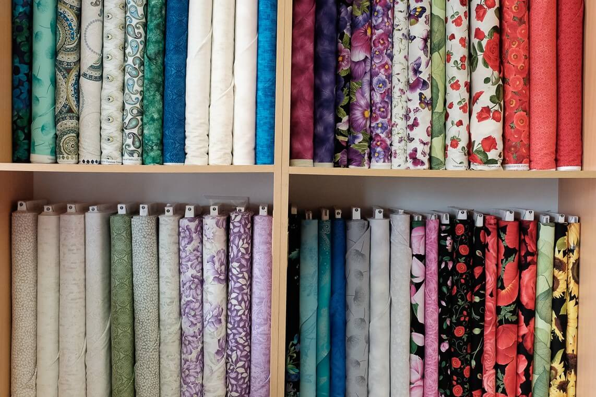

Product News: March 2019
This Month's Feature: Our Exquisite Range of Quilting Fabrics
Exclusive Imported 100% Cotton Quilting from Robert Kaufman & Timeless Treasures.
“ You know you're a Quilter when you ask your children if they want a sandwich cut in half-square triangles or quarter-square triangles.”
Our Fabric Story
Buying quilting fabric online has never been easier!
At, Quilt Worx, We are the Suppliers of Premium brand and Quality Pure Cotton Fabrics.
Browse through our contemporary collection of high quality, 100% imported cotton fabric perfectly suited for quilting, cloyhing and crafting.
Portfolio
We specialise in an exquisite ranges of fine cotton prints:- Novelty fabrics, Adults & Children; Batiks, Splendour & Metallics, Solids, Flannels and Pre Cuts.
Quilting Know How!
- What is quilters weight cotton?
- What is a quilting fabric?
- What kind of fabric is used for quilts?